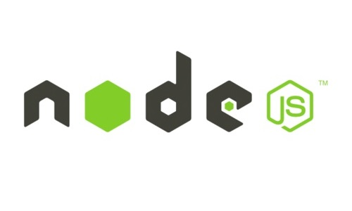
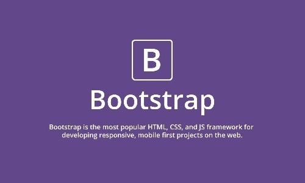
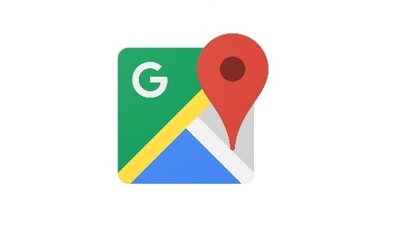

개발 시 사용한 오픈소스 라이브러리와 프레임워크입니다.

Node.js

Bootstrap

Google Map API

Particle Ground

Bootstrap 4 Cards

Joe Sixpack About & Profile Modal
홈페이지 개발자를 소개합니다.
Bong-Hun Han
반응형 웹페이지 개발
이민혜
이광원
최재은
PDF TEST